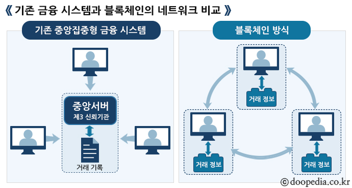
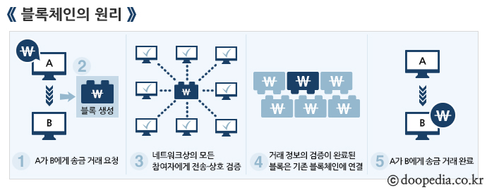

블록체인은 금융기관에서 모든 거래를 담보하고 관리하는 기존의 금융 시스템에서 벗어나 P2P(Peer to Peer；개인 대 개인) 거래를 지향하는, 탈(脫)중앙화를 핵심 개념으로 한다. P2P란 서버나 클라이언트 없이 개인 컴퓨터 사이를 연결하는 통신망을 말하며, 연결된 각각의 컴퓨터가 서버이자 클라이언트 역할을 하며 정보를 공유하는 방식이다. 기존 금융 시스템에서는 금융회사들이 중앙 서버에 거래 기록을 보관해 온 반면, P2P 방식을 기반으로 하는 블록체인에서는 거래 정보를 블록에 담아 차례대로 연결하고 이를 모든 참여자가 공유한다. [네이버 지식백과] 블록체인 [Blockchain] (두산백과)
거래 과정은 다음과 같이 이루어진다. ① A가 B에게 송금 희망 등의 거래 요청을 한다. ② 해당 거래 정보가 담긴 블록이 생성된다. ③ 블록이 네트워크상의 모든 참여자에게 전송되면, 참여자들은 거래 정보의 유효성을 상호 검증한다. ④ 참여자 과반수의 데이터와 일치하는 거래 내역은 정상 장부로 확인하는 방식으로 검증이 완료된 블록은 이전 블록에 연결되고, 그 사본이 만들어져 각 사용자의 컴퓨터에 분산 저장된다. ⑤ A가 B에게 송금하여 거래가 완료된다. [네이버 지식백과] 블록체인 [Blockchain] (두산백과)
이렇게 하여 거래할 때마다 거래 정보가 담긴 블록이 생성되어 계속 연결되면서 모든 참여자의 컴퓨터에 분산 저장되는데, 이를 해킹하여 임의로 수정하거나 위조 또는 변조하려면 전체 참여자의 과반수 이상의 거래 정보를 동시에 수정하여야 하기 때문에 사실상 불가능하다. 따라서 접근을 차단함으로써 거래 정보를 보호·관리하는 기존의 금융 시스템과는 전혀 달리, 블록체인에서는 모든 거래 정보를 누구나 열람할 수 있도록 공개한 상태에서 은행 같은 공신력 있는 제3자의 보증 없이 당사자 간에 안전하게 거래가 이루어진다. [네이버 지식백과] 블록체인 [Blockchain] (두산백과)